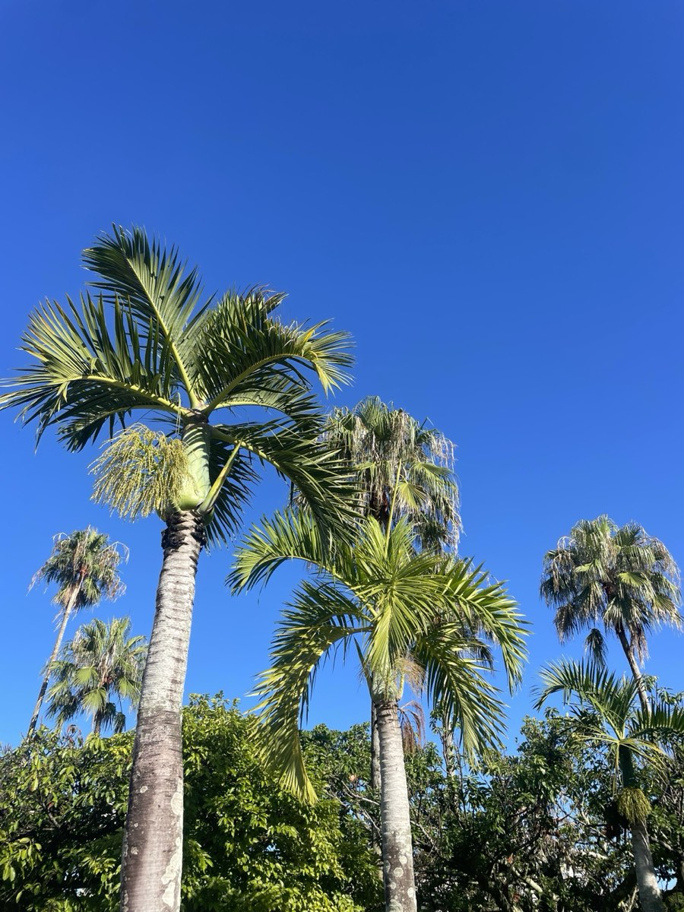

空港からはゆいレールでホテルへ。車はホテルで受け取って、そのまま沖縄ドライブへ出発できます。
お届け先を指定して予約する那覇空港からはゆいレールやタクシーでホテルへ。送迎バスや営業所の受付を待たずに済みます。
国際通りなど那覇市内を歩いて回る日は車なし、北部や南部へ出かける日だけ車ありにできます。
チェックイン後にホテルで受け取れば、重い荷物を持って営業所へ行く必要はありません。
回収先もエリア内で指定できます。最終日はホテルで返して、ゆいレールで空港へ。
那覇市・豊見城市の対象エリア内にあるホテル・自宅などへお届け・回収します（エリア限定のオプション）。国際通り・県庁前・旭橋・おもろまち・泊・小禄の周辺などが目安です。お届けできるかどうかは、予約画面の地図で場所を指定すると確認できます。
| クラス | 車種の例・定員 | 24時間の目安 |
|---|---|---|
| コンパクト | アクア／ヴィッツ／ノート5名 | ¥2,700〜 |
| セダン／ハイブリッド | プリウス／プリウスα5名 | ¥3,000〜 |
| コンパクトSUV | ライズ／ヤリスクロス5名 | ¥4,500〜 |
| ミニバン | ノア／セレナ8名 | ¥4,500〜 |
| SUV | ハリアー5名 | ¥5,000〜 |
| ミニバン | ノア／ヴォクシー／セレナ 等8名 | ¥5,500〜 |
| プレミアムミニバン | アルファード8名 | ¥7,000〜 |
料金は24時間あたりの基本料金です。繁忙日（年末年始・GW・お盆など）は高くなります。正確な料金・空車は予約画面でご確認ください。
到着日はゆいレールで国際通りへ。翌朝ホテルで車を受け取って、美ら海水族館や古宇利島へ。
夜は車を使わないなら、翌日の受け取りにすると1日分の駐車場や料金を気にせずに済みます。
チャイルドシート・ジュニアシートを付けた車をホテルで受け取れます。7〜8人乗りのミニバンもあります。
自宅や実家、宿泊先への配車にも。営業所へ行く時間を省けます。
| 項目 | 料金 |
|---|---|
| 免責補償 | ¥1,10024時間あたり |
| 安心ワイドパック（免責補償＋NOC） | ¥1,65024時間あたり |
| チャイルドシート | ¥1,000 |
| ジュニアシート | ¥500 |
補償内容の詳細は保険プランをご確認ください。